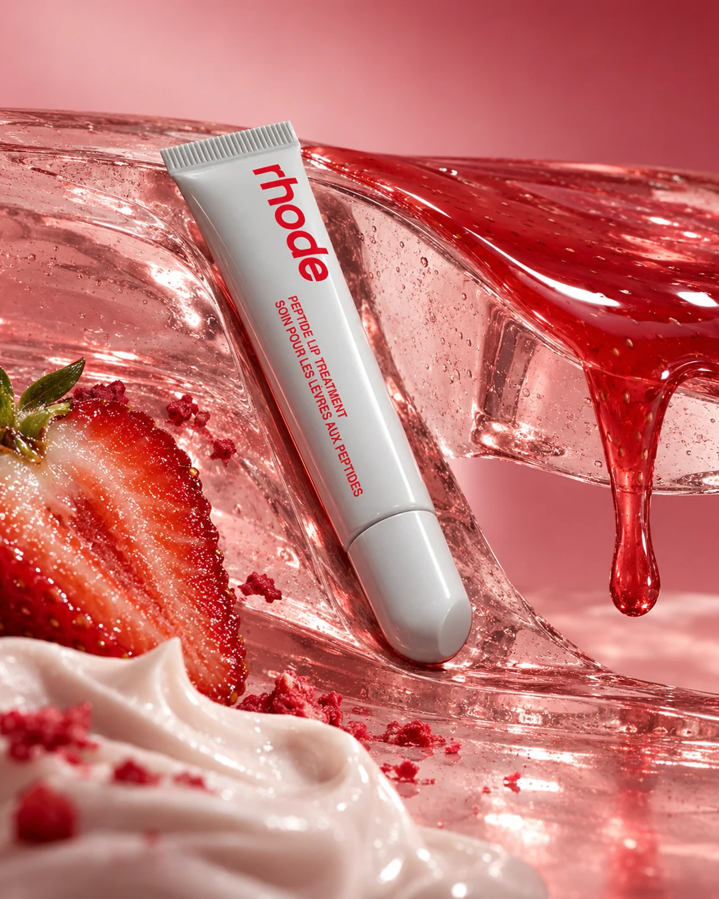
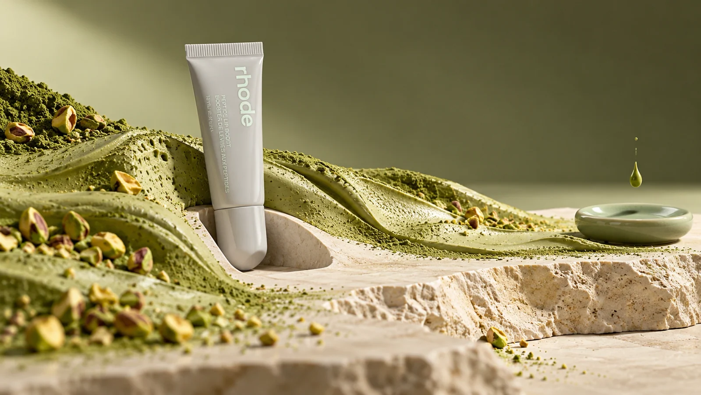
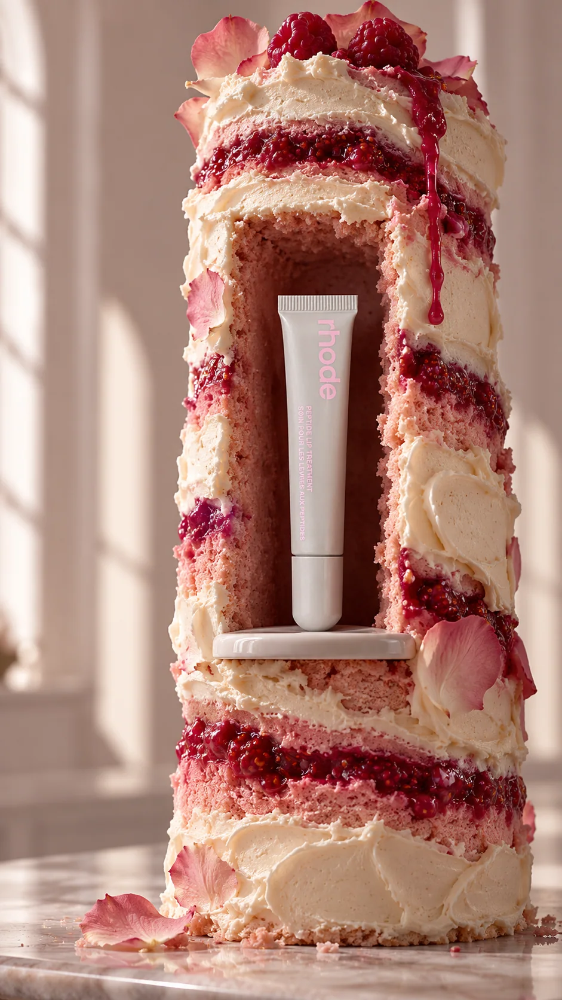
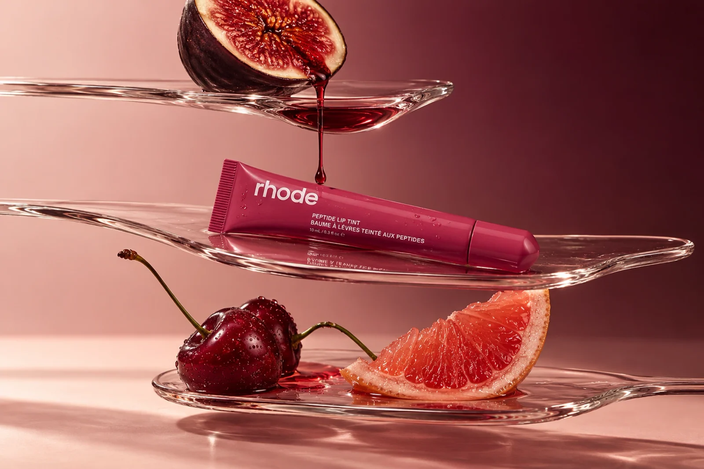
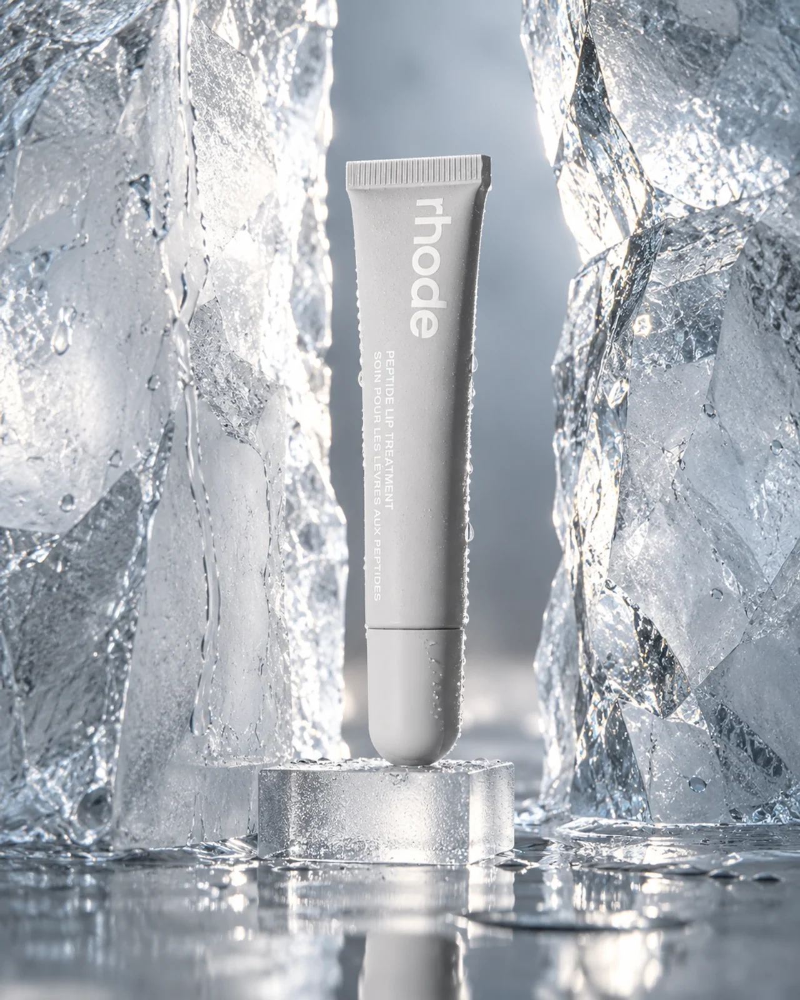
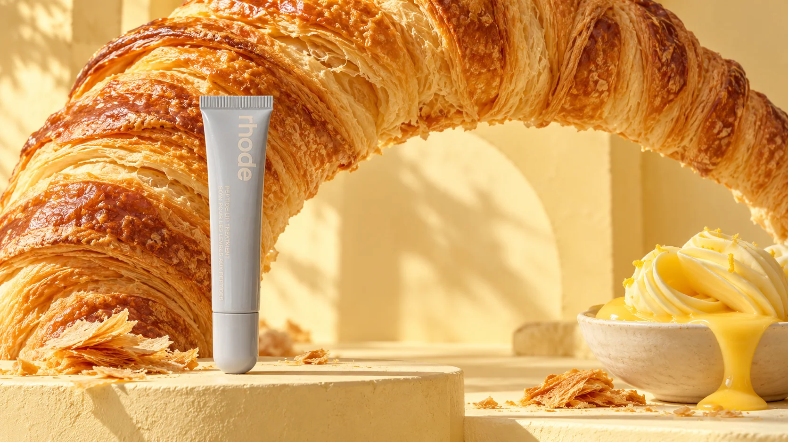
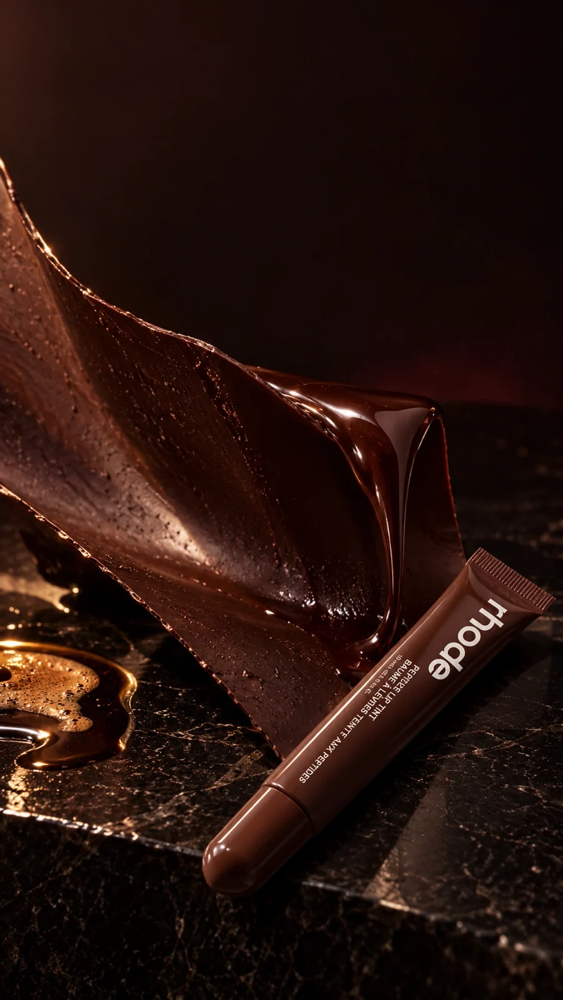
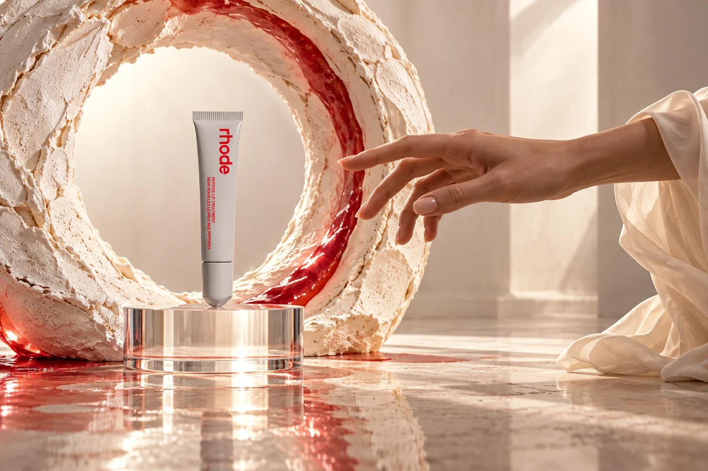

← All work
Beauty · Unofficial brand study
ART OF CRAVING
Beauty and patisserie in eight sharply different material worlds.

The idea
A restrained product form meets edible textures without disappearing inside them. Each frame changes the camera, light and dominant material; the packaging stays the recognition point.
Making the world
Glaze, matcha, cake, fruit, ice, pastry and chocolate create sensory range. The scenes are AI-assisted visualisations, not real shoots or claims that the cosmetics are edible.
The series






